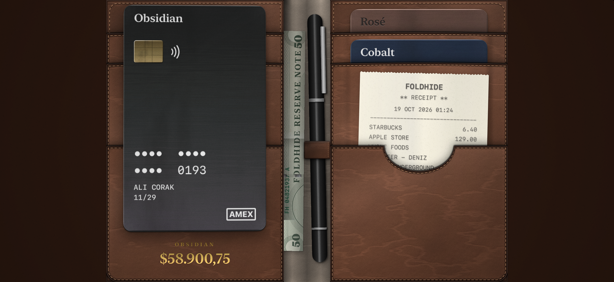

A real leather bi-fold wallet for iPhone.

Open your iPhone Duo and it becomes a bi-fold wallet: brushed-metal cards in leather slots, a folded note, a pen and a receipt. On other iPhones the wallet opens straight away.
Questions, feedback or a problem? Write to hi@alicorak.com and I'll get back to you.
Foldhide collects no data. Read the privacy policy.
© 2026 Ali Corak